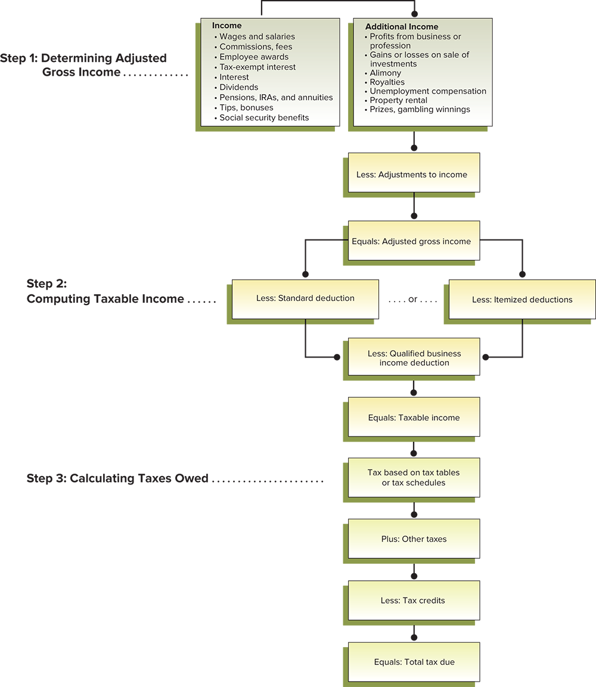
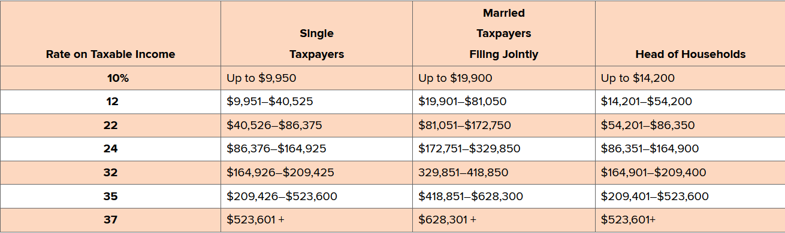
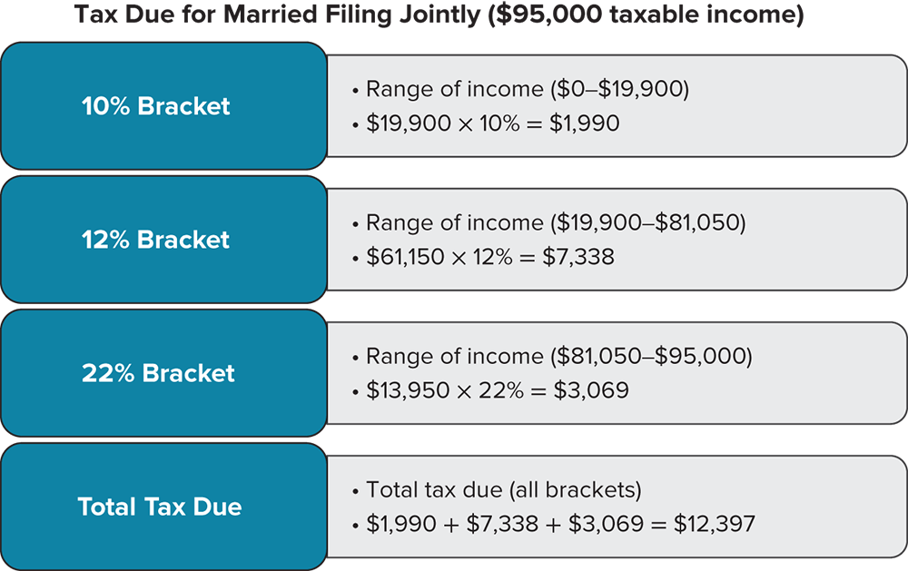

- About a third of the money you earn will go to taxes
- Four major categories of taxes
- Taxes on purchases (sales tax)
- Taxes on property: (real estate and personal property taxes)
- Taxes on wealth: (estate tax and inheritance tax)
- Taxes on earnings: income taxes(federal, state, and local level)
Below is a diagram showing the process of calculating taxes:
- Adjusting gross income(AGI): gross income after specific additions and reductions
- Additions: rental income and business profits
- Reductions: contributions to IRA or insurance plan
- Tax deductions: an amount subtracted from AGI to arrive to taxable income; only one of two types can be selected:
- Standard deduction: a set amount that every taxpayer receives; as of 2021, the deduction is $12,550
- Itemized deduction: expenses a taxpayer is allowed to deduct from AGI
- For medical and dental expenses, the deduction is equal to the total expenses after subtracting 7.5% of AGI
- Tax credits: an amount subtracted directly from the taxes owned
- Here is the 2021 table for taxes as well as an example calculation:  
- Tax evasion: illegal methods for reducing taxes
- Tax avoidance: legal methods for reducing taxes
- Retirement and Investment Plans
- Retirement plans are usually only tax-deferred(not counted) as long as you do not withdraw money from them before "retirement" age of 59 1/2
- Traditional IRA(individual retirement plan)
- A tax-defferred plan where you can contribute up to $6000(as of 2021) per year, or $7000 if you are above 50 years old
- ROTH IRA
- Can contribute up to $6000 annually, while not tax-deductible, is tax-free after 5 years
- Can be withdrawn without consquences if with disablility or for purchase of first home (max of $10,000)
- 401K Plan
- A tax-deffered retirement plan under an employer(as allowed by tax code 401K)
- Can be moved to new employer/plan if job change occurs